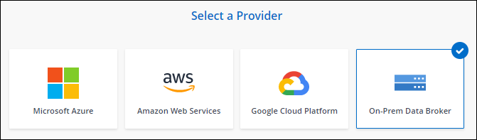

版本資訊
版本資訊
在 Linux 主機上安裝資料代理程式
 建議變更
建議變更
當您建立新的資料代理人群組時、請選擇「內部部署的Data Broker」選項、將資料代理人軟體安裝在內部部署的Linux主機上、或安裝在雲端的現有Linux主機上。BlueXP 複本與同步會引導您完成安裝程序、但本頁面會重複這些要求與步驟、以協助您準備安裝。
Linux 主機需求
-
* Node.js 相容性 * ： v21.2.0
-
* 作業系統 * ：
-
CentOS 8.0和8.5
不支援CentOS串流。
-
Red Hat Enterprise Linux 8.0 、 8.5 和 8.8
-
洛基Linux 9
-
Ubuntu Server 20.04 LTS
-
SUSE Linux Enterprise Server 15 SP1
在安裝資料代理程式之前、必須先在主機上執行命令「yum update」。
Red Hat Enterprise Linux 系統必須在 Red Hat 訂購管理中註冊。如果未註冊、系統將無法在安裝期間存取儲存庫來更新所需的協力廠商軟體。
-
-
* RAM* ： 16 GB
-
* CPU* ： 4 核心
-
* 可用磁碟空間 * ： 10 GB
-
* SELinux * ：建議您停用 "SELinux" 在主機上。
SELinux 會強制執行封鎖資料代理程式軟體更新的原則、並封鎖資料代理程式、使其無法連絡正常作業所需的端點。
root權限
資料代理軟體會在Linux主機上自動以root執行。以root執行是資料代理程式作業的必要條件。例如、掛載共用。
網路需求
-
Linux 主機必須連線至來源和目標。
-
檔案伺服器必須允許 Linux 主機存取匯出。
-
連接埠 443 必須在 Linux 主機上開啟、才能傳出流量至 AWS （資料代理程式會持續與 Amazon SQS 服務通訊）。
-
NetApp 建議將來源、目標及資料代理程式設定為使用網路時間傳輸協定（ NTP ）服務。三個元件之間的時間差異不應超過 5 分鐘。
可存取 AWS
如果您計畫使用內含 S3 儲存區之同步關係的資料代理程式、則應準備 Linux 主機以進行 AWS 存取。安裝資料代理程式時、您必須為具有程式化存取權和特定權限的 AWS 使用者提供 AWS 金鑰。
-
使用建立 IAM 原則 "此 NetApp 提供的原則"
-
建立具有程式化存取權限的 IAM 使用者。
請務必複製 AWS 金鑰、因為您在安裝資料代理軟體時必須指定這些金鑰。
可存取 Google Cloud
如果您計畫使用資料代理商的同步關係、包括Google Cloud Storage儲存庫、則應準備Linux主機以進行Google Cloud存取。安裝資料代理程式時、您必須提供具有特定權限的服務帳戶金鑰。
-
如果您還沒有Google Cloud服務帳戶、請建立具有Storage Admin權限的Google Cloud服務帳戶。
-
建立以 Json 格式儲存的服務帳戶金鑰。
檔案應至少包含下列內容：「 project _id 」、「 Private _key 」和「 client_email"

當您建立金鑰時、檔案會產生並下載到您的機器上。 -
將 Json 檔案儲存至 Linux 主機。
可存取 Microsoft Azure
透過在「同步關係」精靈中提供儲存帳戶和連線字串、即可根據關係定義 Azure 存取權。
安裝資料代理程式
建立同步關係時、您可以在 Linux 主機上安裝資料代理程式。
-
選取 * 建立新同步 * 。
-
在 * 定義同步關係 * 頁面上、選擇來源和目標、然後選取 * 繼續 * 。
完成這些步驟、直到您到達「資料代理人群組」頁面為止。
-
在 * 資料代理人群組 * 頁面上、選取 * 建立資料代理人 * 、然後選取 * 內部資料代理人 * 。

即使選項標示為「 * _ON-Prem_Data Broners* 」、也適用於內部部署或雲端上的 Linux 主機。 -
輸入資料代理程式的名稱、然後選取 * 繼續 * 。
指示頁面即將載入。您必須遵循這些指示、其中包含下載安裝程式的獨特連結。
-
在說明頁面上：
-
選擇是否啟用 * AWS* 、 * Google Cloud * 或兩者的存取。
-
選擇一個安裝選項： * 無代理 * 、 * 使用 Proxy 伺服器 * 或 * 使用 Proxy 伺服器搭配驗證 * 。
使用者必須是本機使用者。不支援網域使用者。 -
使用命令下載及安裝資料代理程式。
下列步驟提供每個可能安裝選項的詳細資訊。請依照指示頁面、根據您的安裝選項取得確切的命令。
-
下載安裝程式：
-
無代理：
「 curl <URI > -o data_Broker _installer.sh 」
-
使用 Proxy 伺服器：
「 curl <URI > -o data_broker_installer.sh -x <proxy_host>:<proxy_port>'
-
使用 Proxy 伺服器進行驗證：
「 curl <URI > -o data_broker_installer.sh -x <proxy_username>:<proxy_password>@<proxy_host>:<proxy_port>'
- 開放的我們
-
BlueXP 複製與同步會在指示頁面上顯示安裝檔案的 URI 、當您依照提示部署內部資料代理人時、會載入該 URI 。此 URI 不會重複出現、因為連結是動態產生的、只能使用一次。 請依照下列步驟、從 BlueXP 複本和同步取得 URI。
-
-
切換至超級使用者、執行安裝程式並安裝軟體：
下列每個命令都包含AWS存取和Google Cloud存取的參數。請依照指示頁面、根據您的安裝選項取得確切的命令。 -
無 Proxy 組態：
「 Udo -s chmod+x data_broker_installer.sh ./data_broker_installer.sh -a <AWs_access_key> -s <AWs_secret 鍵 > -g <jure_path_to_the_json_file> 」
-
Proxy 組態：
"Udo -s chmod+x data_broker_installer.sh ./data_broker_installer.sh -a <AWs_access_key> -s <AWs_secret 鍵 > -g <jure_path_to_the_json_file> -h <prox_host> -p <prox_port>'
-
Proxy 組態搭配驗證：
s chmod+x data_broker_installer.sh ./data_broker_installer.sh -a <AWs_access_key> -s <AWs_secret 鍵 > -g <jure_path_to_the_json_file> -h <proxy_host> -p <proxy_port> -u <proxy_username>-w <proxy_password>`
-
-
-
一旦資料代理程式可用、請在 BlueXP 複本中選取 * 繼續 * 、然後進行同步處理。
-
完成精靈中的頁面、以建立新的同步關係。